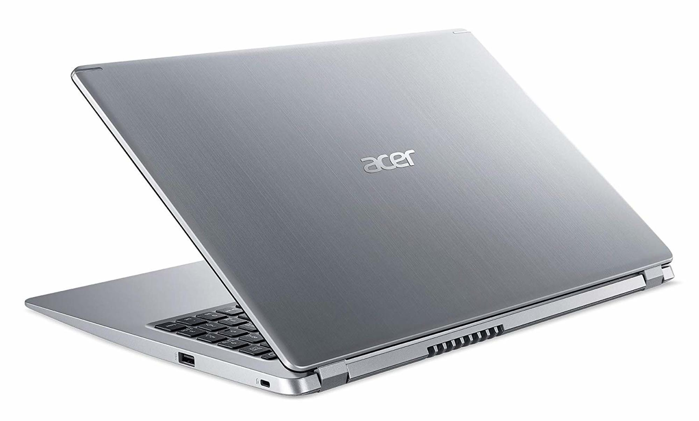
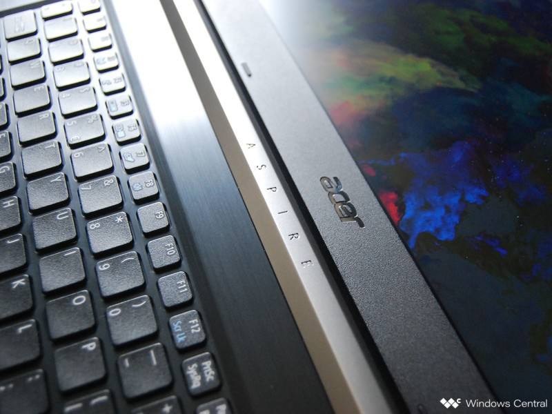
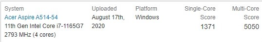

Acer Aspire 5:
The most cost-effective laptop!

Acer launched its Acer new aspire 5 series. In this series, Acer replaced them with the 11th generation Intel processor. In terms of graphics card, it used two different graphics cards, Intel iris or nvida mx350. At the same time, in terms of screen size, it is equipped with 14 inch and 15.6 inch versions for consumers to choose. Come down and have a look at Acer's new aspire What's more about the 5 Series!
The specifications of Acer Aspire 5 are as follows:
- Running Windows 10 system
- 14 inch / 15.6 inch FHD IPS display screen
- Highest Intel Core i7-1165g7 processor
- Intel iris / NVIDIA mx350 graphics card
- 4GB DDR4 RAM (upgradeable to 20GB)
- 512GB PCIe NVMe SSD
- 2 USB 3.2 Gen 1 interface, 1 USB type-C interface (support thunderbolt 4, PD, DP), 3.5mm headphone interface, hdmi2.0 interface (HDCP support)
- 328 (W) x233 (d) x17.95 (H) mm (14 inch version), 363.4 (W) x 238.5 (d) x 17.9 (H) mm (15.6 inch version)
- 1.45kg (14 inch version), 1.65kg (15.6 inch version)
Design


The Acer Aspire 5 looks like a long-lost MacBook cousin –– it’s not your first choice, per se, but you wouldn’t kick it out of bed. It's thin and sleek with subtle understated styling, making it pleasing to the eye without being overly flashy.
When closed, the unit's lid is firmly down against the chassis, and with its super-smooth surfaces, it’s a little difficult to open. Once you do get it open, your eyes are introduced to a pleasing design. The first thing you notice is the minimal black bezel surrounding the display. Next, you’ll drink in the full backlit Chiclet-style keyboard which sits above the touchpad all snuggled into the silver casing with its curved rounded corners adding to the sleek feeling of the Aspire 5. The ample palm rest gives the feeling you’re using a much larger laptop.
Screen
The Aspire 5’s 15.6-inch, 1920 x 1080-pixel display is bright with good color saturation. Watching the trailer for Magic Camp, the colors and tones were rendered nicely, especially when one group of kids came strolling out in dramatic slow-mo wearing red sweatsuits. The colors were well saturated, warm, and rich, and the contrast was excellent throughout. Overall, it was a solid visual experience. You can totally veg and binge-watch movies with this display.
When our team of skilled mad scientists measured the panel’s color reproduction, the Aspire 5 scored 63% of the sRGB color gamut, which tied with the Asus VivoBook. The Lenovo Yoga C740 blew them both away, scoring 111%, which is way above the 89% mainstream laptop average.
The Aspire 5’s display averages 258 nits of brightness, which is brighter than the 248-nit the VivoBook (248 nits) and the Yoga C740 (250 nits).
Peformance

With a Intel Core i7-1165G7 processor, 4GB of RAM, a 512GB PCIe NVMe SSD and an Intel UHD Graphics GPU, the Aspire 5 is a workhorse, capable of easily handling all your daily emails, YouTube breaks, documents and school work.
Aspire5 performed well in our lab tests starting with geekbench 5.0, which is an overall performance benchmark. The laptop scored 2744. The single core processor score is 1371, and the multi-core score is 5050. Such performance is the current mainstream processor level.
Battery life
the Aspire 5 comes with a 48Wh 3-cell Li-ion battery, which Acer rates at eight hours of battery life. When we ran the Laptop Mag Battery test, which consists of continuous web surfing over Wi-Fi at 150 nits of brightness, the laptop lasted for 6 hours and 55 minutes.
Conclusion
The Acer Aspire 5 isn’t a game-changer. Its design is so subdued that it's barely noticeable and its Core i5 processor and integrated graphics won’t blow you away with their performance. But for a seriously affordable $549, the Aspire 5 serves up a solid audio system and has enough power to get the job done, whether the task is writing up a report, video chatting with family or watching a movie.